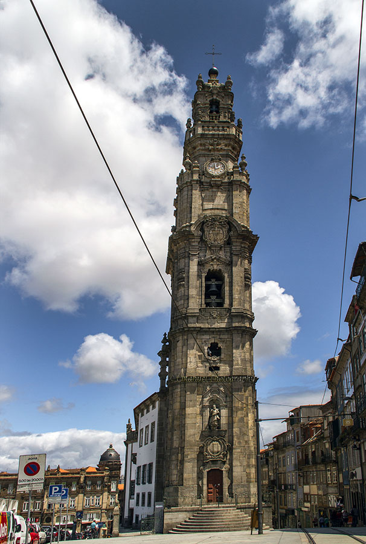
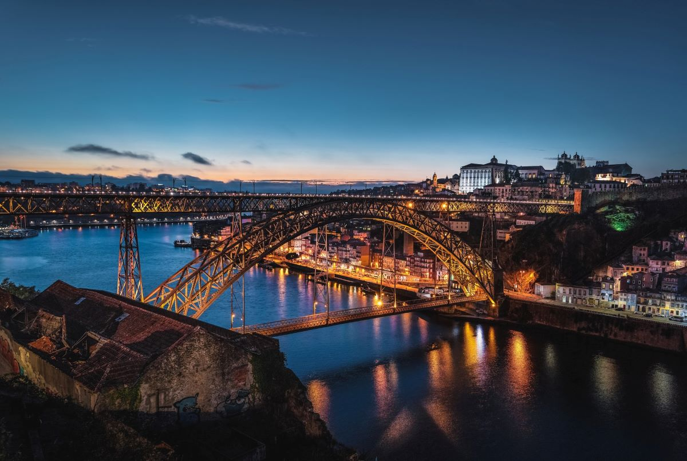
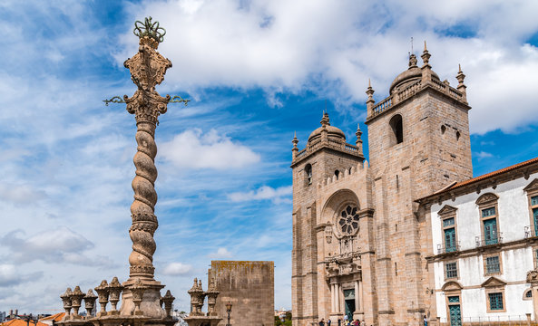
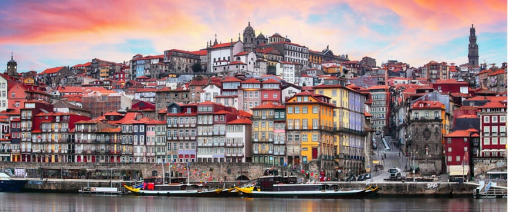
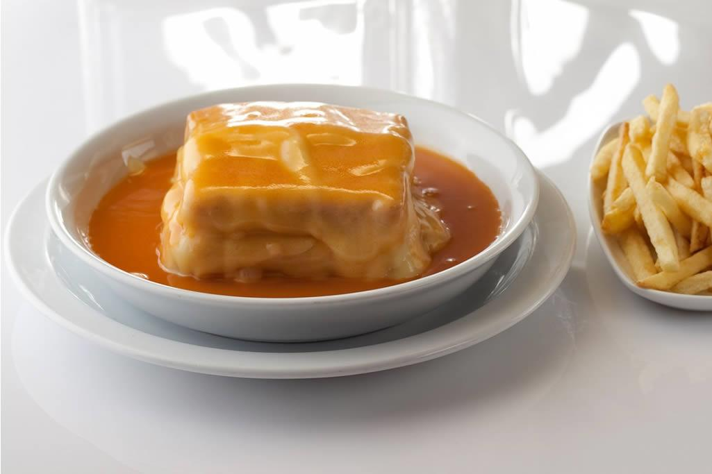
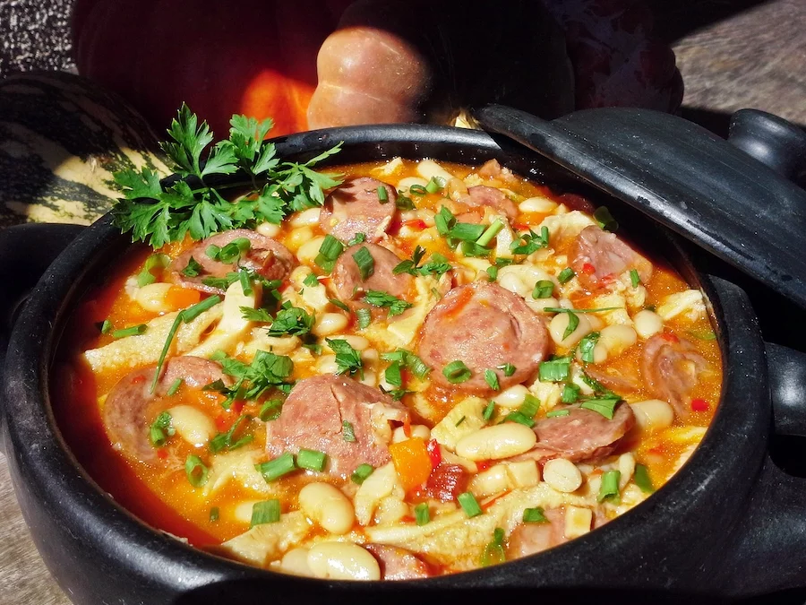
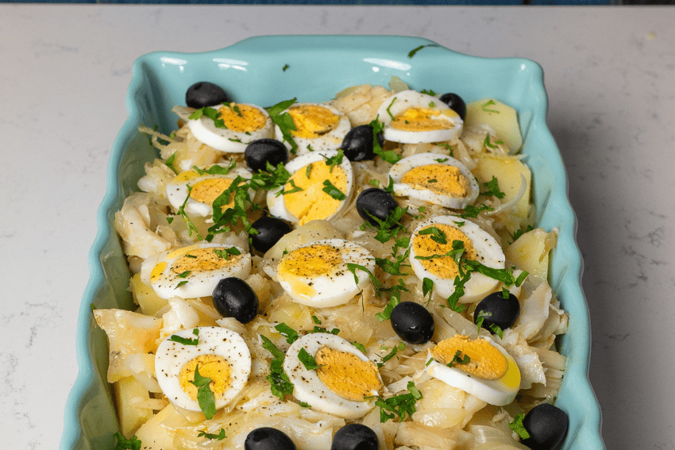
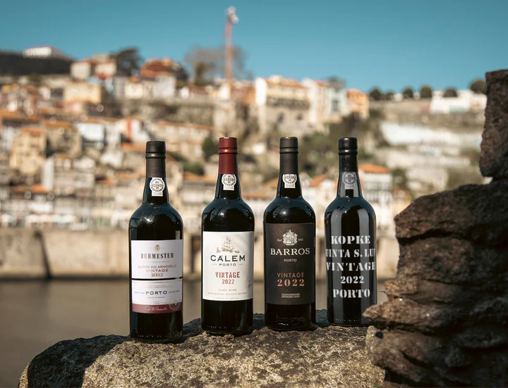

Características Geográficas
O Porto situa-se na margem direita do rio Douro, junto à sua foz no Oceano Atlântico, na região Norte do Grande Porto. O terreno é acidentado, com várias colinas que definem a paisagem urbana da cidade, e o clima é temperado atlântico, com invernos amenos e verões moderados.
População
231 962 hab.
Área
41/45 km²
Densidade Populacional
5 753 hab./km²
Atividades Económicas
A economia do Porto assenta principalmente nas fábricas de têxteis, calçados e alimentos, sendo o vinho do Porto o principal produto de exportação. A riqueza histórica da cidade, evidenciada pelos seus monumentos, sustenta um turismo cultural forte, e os setores de restauração e comércio completam o tecido económico local. Em 2024, os estabelecimentos de alojamento turístico alcançaram 492 milhões de euros, um crescimento de 12,8% face ao ano anterior.
Pontos de Interesse




- Ponte D. Luís I — Ícone da cidade, obra de Théophile Seyrig que liga o Porto a Vila Nova de Gaia
- Torre dos Clérigos — Marco arquitetónico barroco com 76 metros de altura
- Sé do Porto — Catedral medieval que representa um dos marcos mais antigos da cidade
- Ribeira — Zona histórica classificada como Património Mundial pela UNESCO
Gastronomia Típica

Francesinha
Sanduíche típico do Porto com salsicha, fiambre, bacon e molho de cerveja

Tripas à Moda do Porto
Prato tradicional com feijões brancos, carne de porco e fumeiro

Bacalhau à Gomes de Sá
Prato tradicional com bacalhau, batata e azeitas, origem portuense

Vinho do Porto
Vinho fortificado produzido na região do Douro, símbolo da cidade